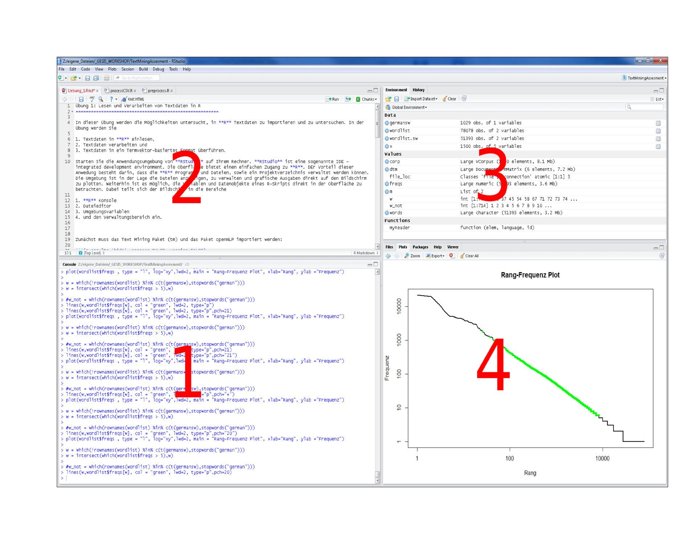

Start RStudio on your computer. RStudio is a so-called IDE - Integrated Development Environment. The interface provides easy access to R. The advantage of this application is that R programs and files as well as a project directory can be managed easily. The environment is capable of editing and running program code, viewing outputs and rendering graphics. Furthermore, it is possible to view variables and data objects of an R-script directly in the interface. The screen divides into the areas

1 + 2 # addition
sqrt(9) # square root function
x <- 1 # assignment
1:10 # sequence
# install.packages("tm")
library("tm")
require("tm")
# help
help(require)
?require
apropos("nova")
# set your working directory
setwd("~") x <- 10.5
typeof(x)
class(x)
as.integer(x)
is.integer(x)
is.integer(as.integer(x))
x <- "3.14"
typeof(x)
x <- as.double(x)
1:3 == c(1, 2, 3)options(stringsAsFactors = F)
myvector <- c(1, 2, 3)
names(myvector) <- c("one", "two", "three")
print(myvector)
print(myvector[1:2])
print(myvector[-1])
sum(myvector)
mean(myvector)
mymatrix <- matrix(0, nrow=3, ncol=4)
rownames(mymatrix) <- c("one", "two", "three")
colnames(mymatrix) <- c("house", "sun", "tree", ".")
mymatrix[, 1] <- 12
mymatrix[, "sun"] <- 4
mymatrix[3, 4] <- 5
mymatrix[2, 3:4] <- 9
colSums(mymatrix)
rowSums(mymatrix)
colMeans(mymatrix)
mydatdaframe <- data.frame(v = c(1, 2, 3), c = as.character(myvector), n = c("one", "two", "three"))
mydatdaframe$v
mydatdaframe$c
mydatdaframe[, "c"]
mydatdaframe[1, ]
rowSums(mydatdaframe)sort(mydatdaframe$n)
sort(mydatdaframe$n, decreasing = T)
c(myvector, myvector)
is.vector(myvector)
is.matrix(mymatrix)
is.matrix(myvector)
mymatrix / 2
mymatrix / myvector
t(mymatrix)
mymatrix %*% t(mymatrix)
cbind(mymatrix, myvector)
rbind(mymatrix, myvector)
data(USArrests)
View(USArrests)
dim(USArrests)
nrow(USArrests)
ncol(USArrests)
length(USArrests)
max(USArrests)
which.max(USArrests[, "Murder"])
o <- order(USArrests[, "Murder"], decreasing = T)
USArrests[o, ]
murderRates <- USArrests[o[1:5], "Murder"]
names(murderRates) <- rownames(USArrests)[o[1:5]]
barplot(murderRates)2017, Andreas Niekler and Gregor Wiedemann. GPLv3. tm4ss.github.io